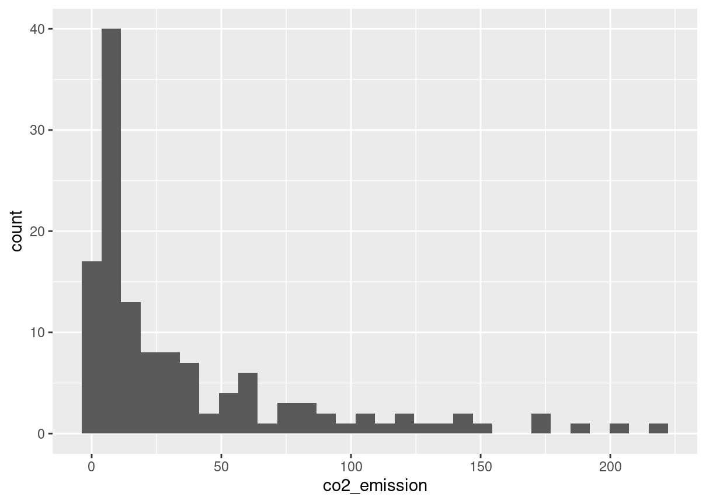
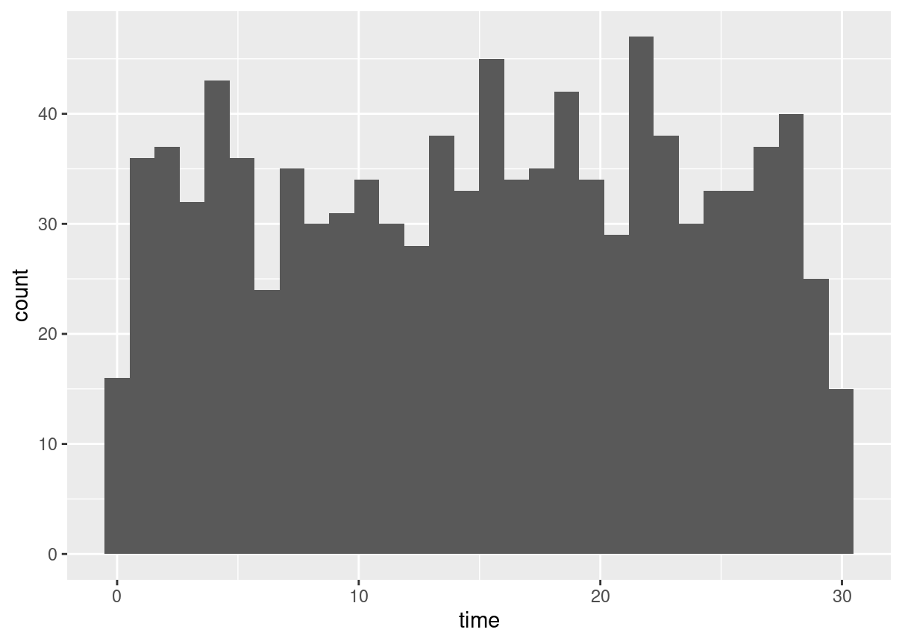
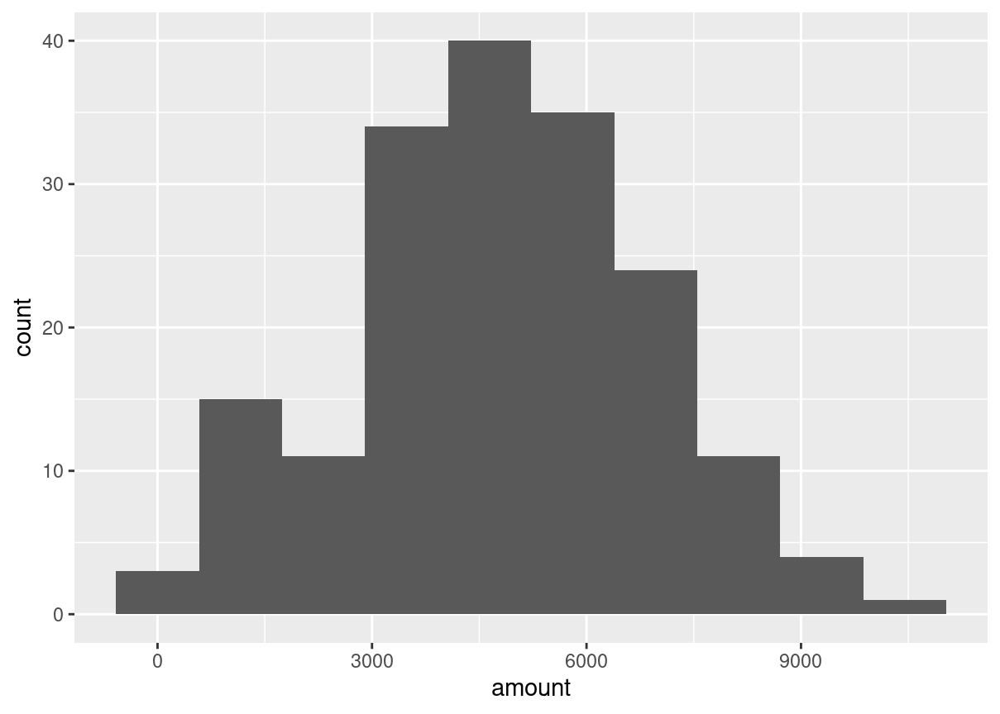
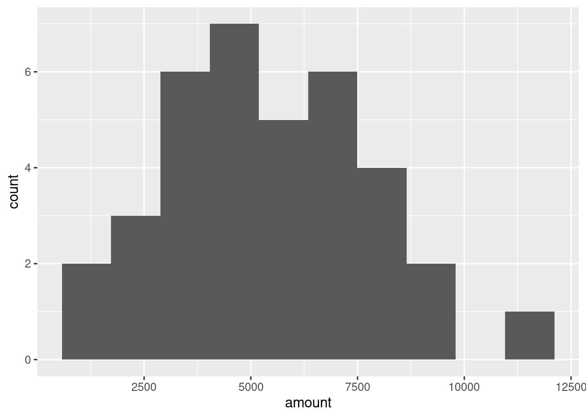
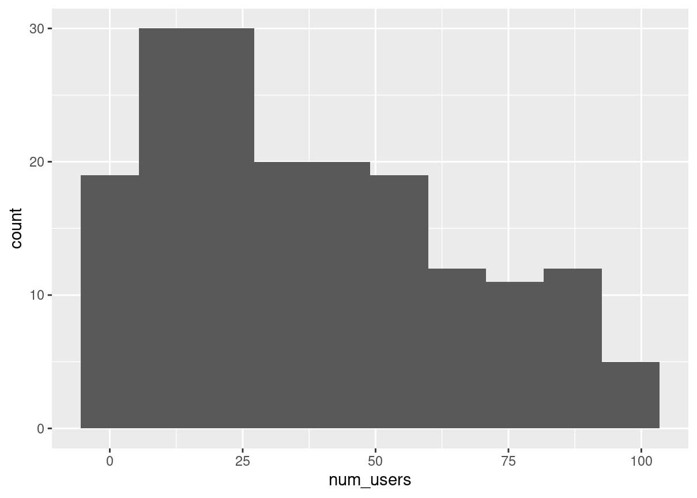
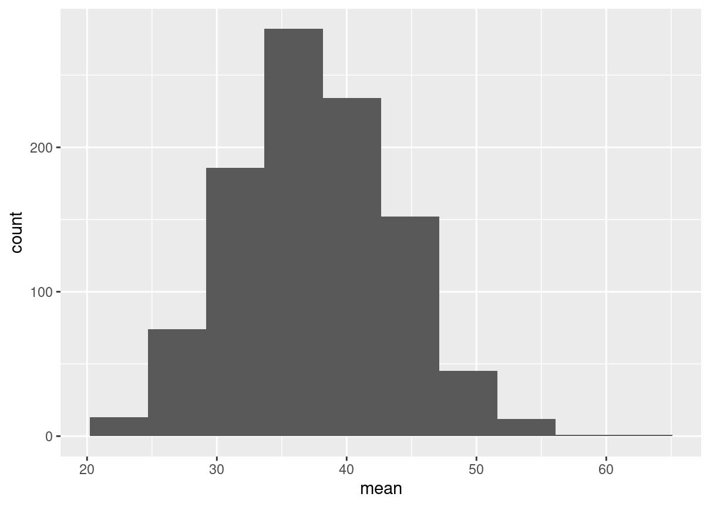
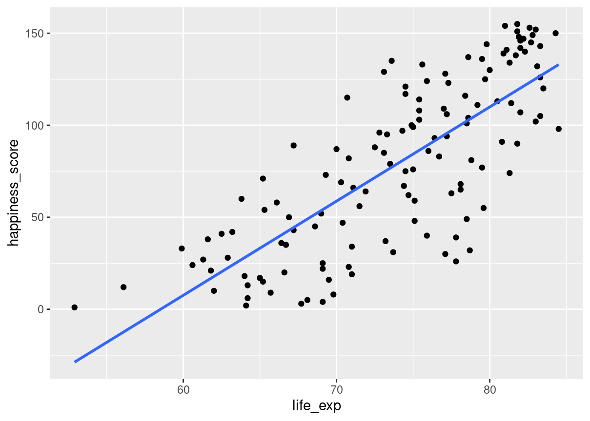
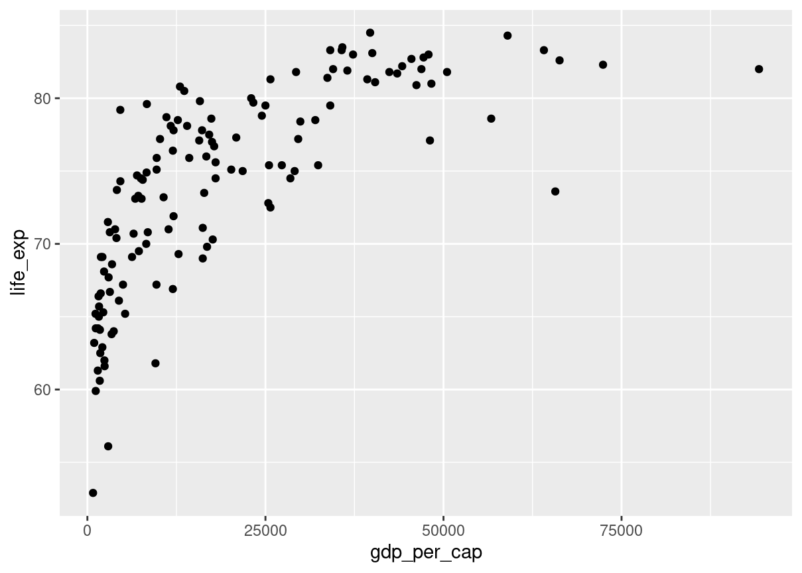
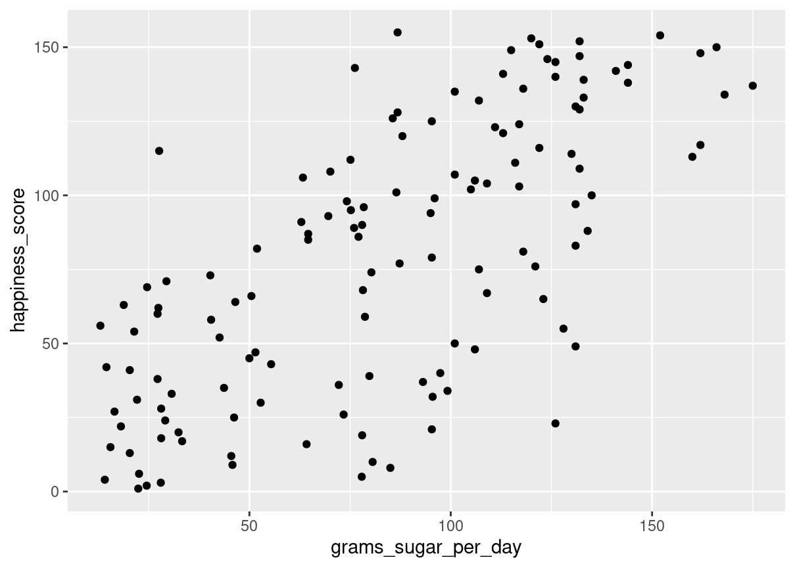

In this chapter, you’ll be working with the 2018 Food Carbon Footprint Index from nu3. The food_consumption dataset contains information about the kilograms of food consumed per person per year in each country in each food category (consumption) as well as information about the carbon footprint of that food category (co2_emissions) measured in kilograms of carbon dioxide, or CO , per person per year in each country.
In this exercise, you’ll compute measures of center to compare food consumption in the US and Belgium using your dplyr skills.
dplyr is loaded for you and food_consumption is available.
library(tidyverse)food_consumption <-readRDS("food_consumption.rds")food_consumption %>%# Filter for Belgium and USAfilter(country %in%c("Belgium", "USA")) %>%# Group by countrygroup_by(country) %>%# Get mean_consumption and median_consumptionsummarise(mean_consumption =mean(consumption),median_consumption =median(consumption))
country
mean_consumption
median_consumption
Belgium
42.13273
12.59
USA
44.65000
14.58
Mean vs. median
In the video, you learned that the mean is the sum of all the data points divided by the total number of data points, and the median is the middle value of the dataset where 50% of the data is less than the median, and 50% of the data is greater than the median. In this exercise, you’ll compare these two measures of center.
food_consumption %>%# Filter for rice food categoryfilter(food_category =="rice") %>%# Create histogram of co2_emissionggplot(aes(co2_emission)) +geom_histogram()

food_consumption %>%# Filter for rice food categoryfilter(food_category =="rice") %>%# Get mean_co2 and median_co2summarise(mean_co2 =mean(co2_emission),median_co2 =median(co2_emission))
mean_co2
median_co2
37.59162
15.2
Quartiles, quantiles, and quintiles
Quantiles are a great way of summarizing numerical data since they can be used to measure center and spread, as well as to get a sense of where a data point stands in relation to the rest of the dataset. For example, you might want to give a discount to the 10% most active users on a website.
In this exercise, you’ll calculate quartiles, quintiles, and deciles, which split up a dataset into 4, 5, and 10 pieces, respectively.
The dplyr package is loaded and food_consumption is available.
# Calculate the deciles of co2_emissionquantile(food_consumption$co2_emission, probs =seq(0,1,0.1))
Variance and standard deviation are two of the most common ways to measure the spread of a variable, and you’ll practice calculating these in this exercise. Spread is important since it can help inform expectations. For example, if a salesperson sells a mean of 20 products a day, but has a standard deviation of 10 products, there will probably be days where they sell 40 products, but also days where they only sell one or two. Information like this is important, especially when making predictions.
Both dplyr and ggplot2 are loaded, and food_consumption is available.
# Calculate variance and sd of co2_emission for each food_categoryfood_consumption %>%group_by(food_category) %>%summarise(var_co2 =var(co2_emission),sd_co2 =sd(co2_emission))
food_category
var_co2
sd_co2
beef
88748.4081324
297.9067105
eggs
21.3718192
4.6229665
fish
921.6373491
30.3584807
lamb_goat
16475.5183631
128.3569958
dairy
17671.8919851
132.9356686
nuts
35.6396522
5.9698955
pork
3094.9635372
55.6323965
poultry
245.0268013
15.6533320
rice
2281.3762431
47.7637545
soybeans
0.8798818
0.9380202
wheat
71.0239365
8.4275700
# Plot food_consumption with co2_emission on x-axisggplot(food_consumption, aes(co2_emission)) +# Create a histogramgeom_histogram() +# Create a separate sub-graph for each food_categoryfacet_wrap(~food_category)
Finding outliers using IQR
Outliers can have big effects on statistics like mean, as well as statistics that rely on the mean, such as variance and standard deviation. Interquartile range, or IQR, is another way of measuring spread that’s less influenced by outliers. IQR is also often used to find outliers. If a value is less than or greater than , it’s considered an outlier. In fact, this is how the lengths of the whiskers in a ggplot2 box plot are calculated.
# Calculate total co2_emission per country: emissions_by_countryemissions_by_country <- food_consumption %>%group_by(country) %>%summarize(total_emission =sum(co2_emission))# Compute the first and third quartiles and IQR of total_emissionq1 <-quantile(emissions_by_country$total_emission, 0.25)q3 <-quantile(emissions_by_country$total_emission, 0.75)iqr <- q3 - q1# Calculate the lower and upper cutoffs for outlierslower <- q1 -1.5* iqrupper <- q3 +1.5* iqr# Filter emissions_by_country to find outliersemissions_by_country %>%filter(total_emission<lower | total_emission > upper)
country
total_emission
Argentina
2172.4
More Distributions and the Central Limit Theorem
Calculating probabilities
You’re in charge of the sales team, and it’s time for performance reviews, starting with Amir. As part of the review, you want to randomly select a few of the deals that he’s worked on over the past year so that you can look at them more deeply. Before you start selecting deals, you’ll first figure out what the chances are of selecting certain deals.
amir_deals <-readRDS("seller_1.rds")# Calculate probability of picking a deal with each productamir_deals %>%count(product) %>%mutate(prob = n/sum(n))
product
n
prob
Product A
23
0.1292135
Product B
62
0.3483146
Product C
15
0.0842697
Product D
40
0.2247191
Product E
5
0.0280899
Product F
11
0.0617978
Product G
2
0.0112360
Product H
8
0.0449438
Product I
7
0.0393258
Product J
2
0.0112360
Product N
3
0.0168539
Sampling deals
In the previous exercise, you counted the deals Amir worked on. Now it’s time to randomly pick five deals so that you can reach out to each customer and ask if they were satisfied with the service they received. You’ll try doing this both with and without replacement.
Additionally, you want to make sure this is done randomly and that it can be reproduced in case you get asked how you chose the deals, so you’ll need to set the random seed before sampling from the deals.
dplyr is loaded and amir_deals is available.
# Set random seed to 31set.seed(31)# Sample 5 deals with replacementamir_deals %>%sample_n(5, replace = F)
product
client
status
amount
num_users
Product D
Current
Lost
3086.88
55
Product C
Current
Lost
3727.66
19
Product D
Current
Lost
4274.80
9
Product B
Current
Won
4965.08
9
Product A
Current
Won
5827.35
50
Creating a probability distribution
A new restaurant opened a few months ago, and the restaurant’s management wants to optimize its seating space based on the size of the groups that come most often. On one night, there are 10 groups of people waiting to be seated at the restaurant, but instead of being called in the order they arrived, they will be called randomly. In this exercise, you’ll investigate the probability of groups of different sizes getting picked first. Data on each of the ten groups is contained in the restaurant_groups data frame.
Remember that expected value can be calculated by multiplying each possible outcome with its corresponding probability and taking the sum. The restaurant_groups data is available and dplyr and ggplot2 are loaded.
# Calculate probability of picking group of 4 or moresize_distribution %>%# Filter for groups of 4 or largerfilter(group_size >=4) %>%# Calculate prob_4_or_more by taking sum of probabilitiessummarise(prob_4_or_more =sum(probability))
prob_4_or_more
0.3
Data back-ups
The sales software used at your company is set to automatically back itself up, but no one knows exactly what time the back-ups happen. It is known, however, that back-ups happen exactly every 30 minutes. Amir comes back from sales meetings at random times to update the data on the client he just met with. He wants to know how long he’ll have to wait for his newly-entered data to get backed up. Use your new knowledge of continuous uniform distributions to model this situation and answer Amir’s questions.
# Min and max wait times for back-up that happens every 30 minmin <-0max <-30# Calculate probability of waiting less than 5 minsprob_less_than_5 <-punif(5, min, max)prob_less_than_5
[1] 0.1666667
# Calculate probability of waiting more than 5 minsprob_greater_than_5 <-punif(5, min, max, lower.tail = F)prob_greater_than_5
[1] 0.8333333
# Calculate probability of waiting 10-20 minsprob_between_10_and_20 <-punif(20, min, max) -punif(10, min, max)prob_between_10_and_20
[1] 0.3333333
Simulating wait times
To give Amir a better idea of how long he’ll have to wait, you’ll simulate Amir waiting 1000 times and create a histogram to show him what he should expect. Recall from the last exercise that his minimum wait time is 0 minutes and his maximum wait time is 30 minutes.
A data frame called wait_times is available and dplyr and ggplot2 are loaded.
wait_times <-data.frame(simulation_nb =1:1000)# Set random seed to 334set.seed(334)# Generate 1000 wait times between 0 and 30 mins, save in time columnwait_times %>%mutate(time =runif(1000, min =0, max =30)) %>%# Create a histogram of simulated timesggplot(aes(time)) +geom_histogram()

Simulating sales deals
Assume that Amir usually works on 3 deals per week, and overall, he wins 30% of deals he works on. Each deal has a binary outcome: it’s either lost, or won, so you can model his sales deals with a binomial distribution. In this exercise, you’ll help Amir simulate a year’s worth of his deals so he can better understand his performance.
# Set random seed to 10set.seed(10)# Simulate a single dealrbinom(1, 1, p =0.3)
[1] 0
# Simulate 1 week of 3 dealsrbinom(1, 3, p =0.3)
[1] 0
# Simulate 52 weeks of 3 dealsdeals <-rbinom(52, 3, p =0.3)# Calculate mean deals won per weekmean(deals)
[1] 0.8076923
Calculating binomial probabilities
Just as in the last exercise, assume that Amir wins 30% of deals. He wants to get an idea of how likely he is to close a certain number of deals each week. In this exercise, you’ll calculate what the chances are of him closing different numbers of deals using the binomial distribution.
# Probability of closing 3 out of 3 dealsdbinom(3, 3, p =0.3)
[1] 0.027
# Probability of closing <= 1 deal out of 3 dealspbinom(1, 3, p =0.3)
[1] 0.784
# Probability of closing > 1 deal out of 3 dealspbinom(1, 3, p =0.3, lower.tail = F)
[1] 0.216
How many sales will be won?
Now Amir wants to know how many deals he can expect to close each week if his win rate changes. Luckily, you can use your binomial distribution knowledge to help him calculate the expected value in different situations. Recall from the video that the expected value of a binomial distribution can be calculated by n * p
# Expected number won with 30% win ratewon_30pct <-3*0.3won_30pct
[1] 0.9
# Expected number won with 25% win ratewon_25pct <-3*0.25won_25pct
[1] 0.75
# Expected number won with 35% win ratewon_35pct <-3*0.35won_35pct
[1] 1.05
More Distributions and the Central Limit Theorem
Distribution of Amir’s sales
Since each deal Amir worked on (both won and lost) was different, each was worth a different amount of money. These values are stored in the amount column of amir_deals As part of Amir’s performance review, you want to be able to estimate the probability of him selling different amounts, but before you can do this, you’ll need to determine what kind of distribution the amount variable follows.
Both dplyr and ggplot2 are loaded and amir_deals is available.
source("data.R")# Histogram of amount with 10 binsggplot(amir_deals, aes(amount))+geom_histogram(bins =10)

Probabilities from the normal distribution
Since each deal Amir worked on (both won and lost) was different, each was worth a different amount of money. These values are stored in the amount column of amir_deals and follow a normal distribution with a mean of 5000 dollars and a standard deviation of 2000 dollars. As part of his performance metrics, you want to calculate the probability of Amir closing a deal worth various amounts.
# Probability of deal < 7500pnorm(7500, mean =5000, sd =2000)
[1] 0.8943502
# Probability of deal > 1000pnorm(1000, mean =5000, sd =2000, lower.tail = F)
[1] 0.9772499
# Probability of deal between 3000 and 7000pnorm(7000, mean =5000, sd =2000) -pnorm(3000, mean =5000, sd =2000)
[1] 0.6826895
# Calculate amount that 75% of deals will be more thanqnorm(.75, mean =5000, sd =2000, lower.tail = F)
[1] 3651.02
Simulating sales under new market conditions
The company’s financial analyst is predicting that next quarter, the worth of each sale will increase by 20% and the volatility, or standard deviation, of each sale’s worth will increase by 30%. To see what Amir’s sales might look like next quarter under these new market conditions, you’ll simulate new sales amounts using the normal distribution and store these in the new_sales data frame, which has already been created for you.
# Calculate new average amountnew_mean <-5000*1.2# Calculate new standard deviationnew_sd <-2000*1.3# Simulate 36 salesnew_sales <- new_sales %>%mutate(amount =rnorm(36, new_mean, new_sd))# Create histogram with 10 binsggplot(new_sales, aes(amount))+geom_histogram(bins =10)

The CLT in action The central limit theorem states that a sampling distribution of a sample statistic approaches the normal distribution as you take more samples, no matter the original distribution being sampled from.
In this exercise, you’ll focus on the sample mean and see the central limit theorem in action while examining the num_users column of amir_deals more closely, which contains the number of people who intend to use the product Amir is selling.
Both dplyr and ggplot2 are loaded and amir_deals is available.
# Create a histogram of num_usersggplot(amir_deals, aes(num_users))+geom_histogram(bins =10)

# Set seed to 104set.seed(104)# Sample 20 num_users from amir_deals and take meansample(amir_deals$num_users, size =20, replace =TRUE) %>%mean()
[1] 30.35
# Repeat the above 100 timessample_means <-replicate(1000, sample(amir_deals$num_users,size =20, replace =TRUE) %>%mean())# Create data frame for plottingsamples <-data.frame(mean = sample_means)# Histogram of sample meansggplot(samples, aes(mean))+geom_histogram(bins =10)

The mean of means
You want to know what the average number of users (num_users) is per deal, but you want to know this number for the entire company so that you can see if Amir’s deals have more or fewer users than the company’s average deal. The problem is that over the past year, the company has worked on more than ten thousand deals, so it’s not realistic to compile all the data. Instead, you’ll estimate the mean by taking several random samples of deals, since this is much easier than collecting data from everyone in the company.
The user data for all the company’s deals is available in all_deals.
# Set seed to 321set.seed(321)# Take 30 samples of 20 values of num_users, take mean of each samplesample_means <-replicate(30, (sample(all_deals$num_users, size =20)) %>%mean())# Calculate mean of sample_meansmean(sample_means)
[1] 37.02667
# Calculate mean of num_users in amir_dealsmean(amir_deals$num_users)
[1] 37.65169
Tracking lead responses
Your company uses sales software to keep track of new sales leads. It organizes them into a queue so that anyone can follow up on one when they have a bit of free time. Since the number of lead responses is a countable outcome over a period of time, this scenario corresponds to a Poisson distribution. On average, Amir responds to 4 leads each day. In this exercise, you’ll calculate probabilities of Amir responding to different numbers of leads.
# Probability of 5 responses#What's the probability that Amir responds to 5 leads in a day, given that he responds to an average of 4?dpois(5, lambda =4)
[1] 0.1562935
# Probability of 5 responses from coworker#Amir's coworker responds to an average of 5.5 leads per day. What is the probability that she answers 5 leads in a day?dpois(5, lambda =5.5)
[1] 0.1714007
# Probability of 2 or fewer responsesppois(2, lambda =4)
[1] 0.2381033
# Probability of > 10 responsesppois(10, lambda =4, lower.tail =FALSE)
[1] 0.002839766
Modeling time between leads To further evaluate Amir’s performance, you want to know how much time it takes him to respond to a lead after he opens it. On average, it takes 2.5 hours for him to respond. In this exercise, you’ll calculate probabilities of different amounts of time passing between Amir receiving a lead and sending a response.
# Probability response takes < 1 hourpexp(1, rate =1/2.5)
In this chapter, you’ll be working with a dataset world_happiness containing results from the 2019 World Happiness Report. The report scores various countries based on how happy people in that country are. It also ranks each country on various societal aspects such as social support, freedom, corruption, and others. The dataset also includes the GDP per capita and life expectancy for each country.
In this exercise, you’ll examine the relationship between a country’s life expectancy (life_exp) and happiness score (happiness_score) both visually and quantitatively. Both dplyr and ggplot2 are loaded and world_happiness is available.
world_happiness <-readRDS("world_happiness_sugar.rds")# Add a linear trendline to scatterplotggplot(world_happiness, aes(life_exp, happiness_score)) +geom_point() +geom_smooth(method ="lm",se = F)

# Correlation between life_exp and happiness_scorecor(world_happiness$life_exp,world_happiness$happiness_score )
[1] 0.7737615
What can’t correlation measure?
While the correlation coefficient is a convenient way to quantify the strength of a relationship between two variables, it’s far from perfect. In this exercise, you’ll explore one of the caveats of the correlation coefficient by examining the relationship between a country’s GDP per capita (gdp_per_cap) and happiness score.
Both dplyr and ggplot2 are loaded and world_happiness is available.
# Scatterplot of gdp_per_cap and life_expggplot(world_happiness, aes(gdp_per_cap, life_exp)) +geom_point()

# Correlation between gdp_per_cap and life_expcor(world_happiness$life_exp,world_happiness$gdp_per_cap )
[1] 0.7235027
The correlation coefficient can’t account for any relationships that aren’t linear, regardless of strength.
Transforming variables
When variables have skewed distributions, they often require a transformation in order to form a linear relationship with another variable so that correlation can be computed. In this exercise, you’ll perform a transformation yourself.
Both dplyr and ggplot2 are loaded and world_happiness is available.
# Scatterplot of happiness_score vs. gdp_per_capggplot(world_happiness, aes(gdp_per_cap, happiness_score)) +geom_point()
The relationship between GDP per capita and happiness became more linear by applying a log transformation. Log transformations are great to use on variables with a skewed distribution, such as GDP.
Does sugar improve happiness?
A new column has been added to world_happiness called grams_sugar_per_day, which contains the average amount of sugar eaten per person per day in each country. In this exercise, you’ll examine the effect of a country’s average sugar consumption on its happiness score.
Both dplyr and ggplot2 are loaded and world_happiness is available.
# Scatterplot of grams_sugar_per_day and happiness_scoreggplot(world_happiness, aes(grams_sugar_per_day, happiness_score)) +geom_point()

# Correlation between grams_sugar_per_day and happiness_scorecor(world_happiness$grams_sugar_per_day, world_happiness$happiness_score)
[1] 0.69391
If correlation always implied that one thing causes another, people may do some nonsensical things, like eat more sugar to be happier.